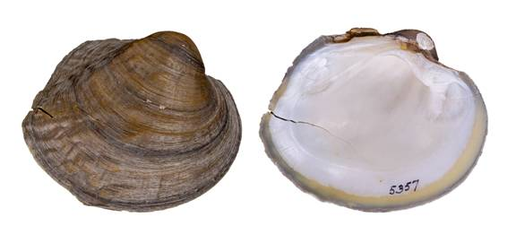

Arcidens wheeleri (Ortmann and Walker 1912)
Ouachita Rock-Pocketbook

Arcidens wheeleri – Old River, Arkadelphia, Arkansas [Ouachita River], length unreported.
Identification
Shell structure: somewhat thick, inflated.
Shell outline: subcircular to subovate or subqudrate to subrhomboidal.
Posterior ridge: low, angular or rounded, sometimes obscurely biangulate.
Shell color: dark reddish-brown, brown, or black, can be lighter towards the umbo; surface dull to subglossy.
Rays: absent.
Shell texture: posterior portion of the shell covered with ridges and corrugations while anterior portion smooth; some individuals may only present faint sculpturing; posterior slope may present fine corrugations.
Umbo: high, broad, elevated above the hinge line; umbo cavity deep.
Umbo sculpture: double-looped bars restricted to the extremity of the umbo, which may only be visible on smaller individuals.
Pseudocardinal teeth: large, serrated, 2 in the left valve, which are separated by a deep cavity, posterior tooth fused with interdental projection forming an arch that extends along the hinge line for a short distance, 1 large, erect, triangular tooth in the right valve.
Lateral teeth: thick, moderately long, double in the left valve, dorsal tooth may be nearly absent in some, single in the right valve.
Interdentum: short, wide.
Nacre: white, bluish-white or salmon-colored, outer rim of the shell dark where the periostracum shows through; iridescent posteriorly.
Other: not sexually dimorphic.
General range
Ouachita and Red River systems of Oklahoma and Arkansas.
Habitat
Streams to rivers, and in those systems primarily occurs along banks, backwater pools, oxbows and side channels in mud, sand, gravel and cobble substrates with little to moderate flow.
Legal listing status: